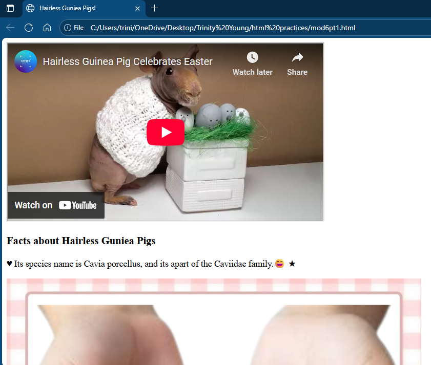
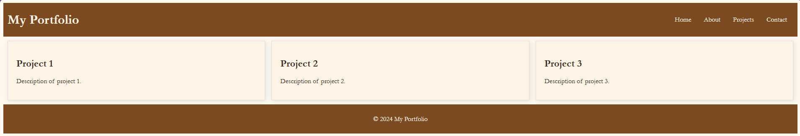

This is the first prototype I've made in Unity, and I am very proud of how it came out. I had a lot of struggles, but this one in particular stood out, and I have learned a lot from it. I contributed by following the tutorial I was given and personalizing it for myself. I also made it so that the camera can change perspectives.
Module 6 Practice is a practice with HTML to show an animal I really like, and it was also a practice for me to learn more HTML. I contributed to it because I did it all by myself, and I'm really proud of it. I also learned how to do maps with it.

Just a small website with an example design, but I really like how it came out, and it shows that I'm able to design websites! It is also a good reference to come back to in case I ever forget something.
